| No | Date | Comments | Version | ISSUE | Approve |
|---|---|---|---|---|---|
| 1 | 25.09.1 | First Draft | 1.0 | xu | |
| 2 | |||||
| 3 | |||||
| 4 |
History
Tools
Electric screwdriver\Long-nose pliers\Slotted screwdriver\Zip tie\Scissors
Repair notice
Important Safety Instructions：
1. Wear gloves when carrying out any repair work.
2. Ensure that there are no exposed electrical wires in the maintenance environment and strictly prohibit direct testing of the equipment with AC power to prevent electric shock.
3. When repairing electrical components, please disconnect the battery pack first.
Preparation:
Empty the clean water tank and dirty water tank before disassembly.
Replacement requirements:
1. All parts that have passed the cross-check must be removed from the faulty machine, fitted with the user's original adapter and then subjected to the next replacement test.
2. After repair, organise the removed old parts and unused parts.
Range of Product
| No | Product Name | Factory Serial Model | SKU | Note |
|---|---|---|---|---|
| 1 | iFLOOR Y3 Stretch Lite | CL2411L-01 | FW1I2100RU | |
| 2 | Yoniev U9 | CL2411P-01 | FW1H1800IL | |
| 3 | iFloor Y5 Stretch | CL2411R-01 | FW1G010ERU | |
| 4 | GO H2O HammerHead Dummy | CL2411E-02 | FW1E0500US | |
| 5 | GH HammerHead Mess Detect Dummy TGT | CL2411F-07 | FW1E230DUS | |
| 6 | N/A | CL2411Q-01 | FW1E2600US | |
| 7 | GO H2O HammerHead Ultra | CL2411E-05 | FW1E2800US | |
| Yoniev U9 Neo | CL2411X-01 | FW1I2500ID | ||
| iFloor Y3 | CL2411H-01 | FW1E0800MY | ||
| GO HammerHeadMess Detect | CL2411F-05 | FW1E1500US | ||
| GH HammerHead TGT Dummy | CL2411E-04 | FW1E2200US | ||
| iFloor Y5 Stretch | CL2411S-01 | FW1G0300VN | ||
| GO H2O HammerHead | CL2411E-01 | FW1E0100US | ||
| iFloor U5 Stretch | CL2411V-01 | FW1I2300AU | ||
| iFloor Y3 Stretch | CL2411H-03 | FW1E3100MY | ||
| GO H2O HammerHead Mess Detect | CL2411F-01 | FW1E0300US | ||
| GO HammerHeadMess Detect | CL2411F-06 | FW1E1600US | ||
| GO HammerHeadMess Detect | CL2411F-02 | FW1E0400US | ||
| iFloor Y5 Stretch Ultra | CL2411I-01 | FW1G1100MY | ||
| GO H2O HammerHead Mess Detect Complete | CL2411F-09 | FW1E2700US | ||
| Go HammerHead Mess Detect Dummy | CL2411F-03 | FW1E0600US | ||
| GO H2O HammerHead MessDetect Ultra | CL2411F-10 | FW1E2900US | ||
| Yoniev U9 Pro | CL2411N-01 | FW1G180YID |
Range of Spare Part
*The following table lists all the spare parts. Please check the actual inventory before use.
| No | Spare Part Name | Remark |
|---|---|---|
| 1 | Mini Power Brush | 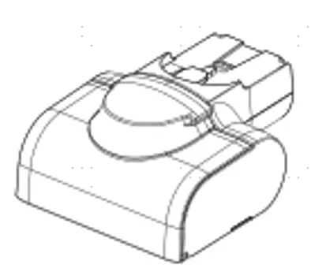 |
| 2 | Mini Power Brush |  |
| 3 | Adapter |  |
| 4 | Brush Roller Cover |  |
| 5 | Brush Roller |  |
| 6 | Filter | 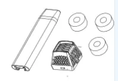 |
| 7 | Accessory Holder |  |
| 8 | Charging Base | 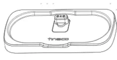 |
| 9 | Battery |  |
| 10 | Motor | 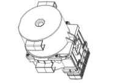 |
| 11 | Wire |  |
| 12 | Switch (recline detection) | 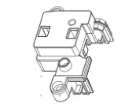 |
| 13 | PCBA |  |
| 14 | PCBA (handle) |  |
| 15 | Sensor （water level） |  |
| 16 | Pump |  |
| 17 | Flexible Extension Hose |  |
| 18 | Clean Water Tank | |
| 19 | Dirt Water Tank | |
| 20 | Cleaning Solution |
Display interaction
CL2411X-01 Yoniev U9
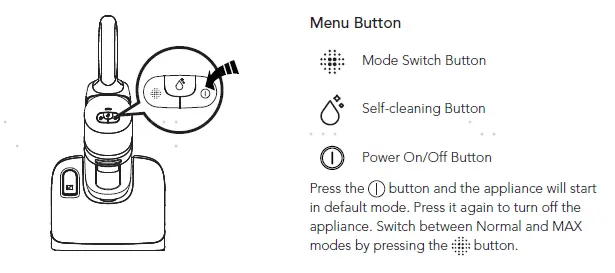
CL2411Q-01 TIneco Floor One Y3
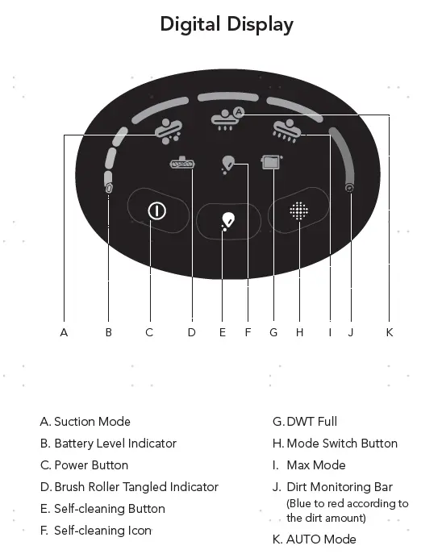
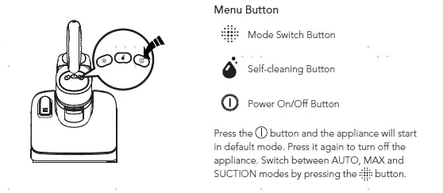
Tear down Guide
disassemble the battery pack&Display screen
rotate counterclockwise to remove the keypad cover
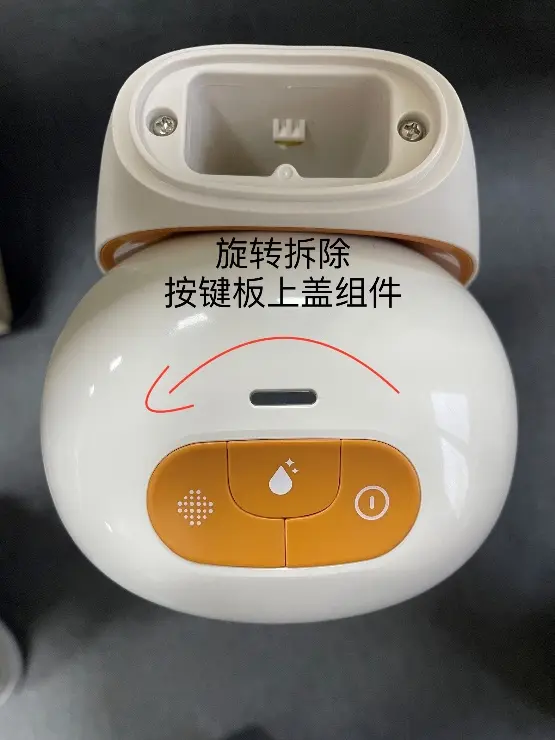
disconnect the wiring harness terminal interface, remove the two screws, and take out the battery pack
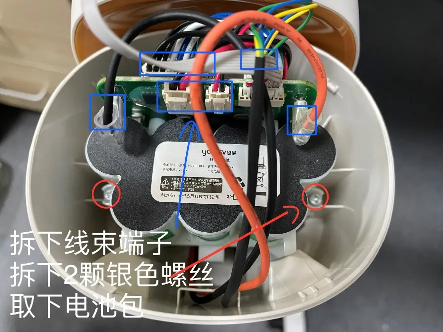
2. disassemble the body
Remove the two screws in the left image, and you will get the decorative cover shown in the right image
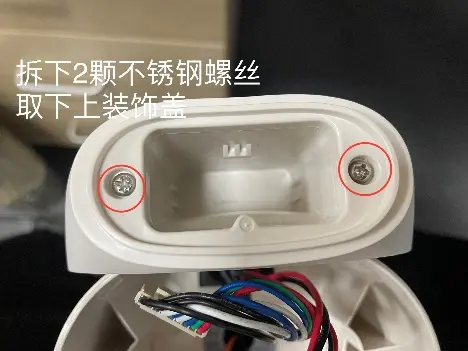
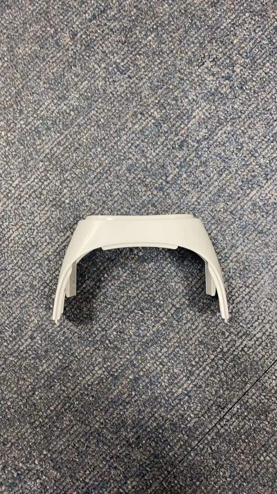
pry open the rear cover decorative cap with a flathead screwdrive
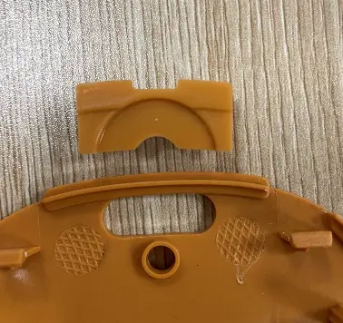
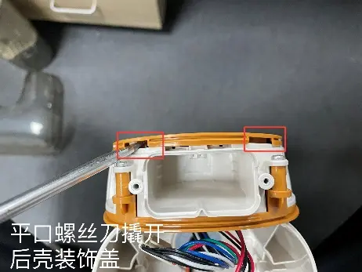
Following the previous step, remove the rear cover decorative cap, which is clipped onto the body.
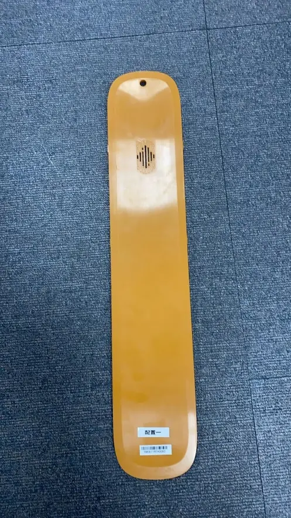
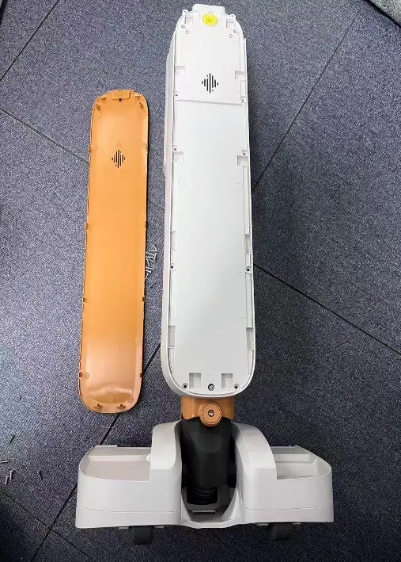
Remove the 13 screws on the rear cover, and then you can take off the rear cover
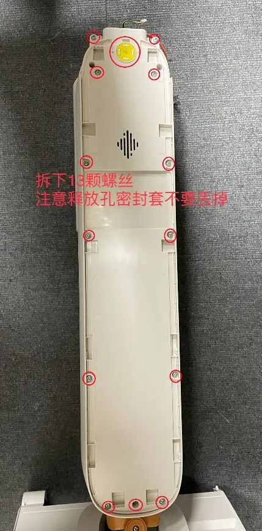
After removing the rear cover of the fuselage, you can see the image above
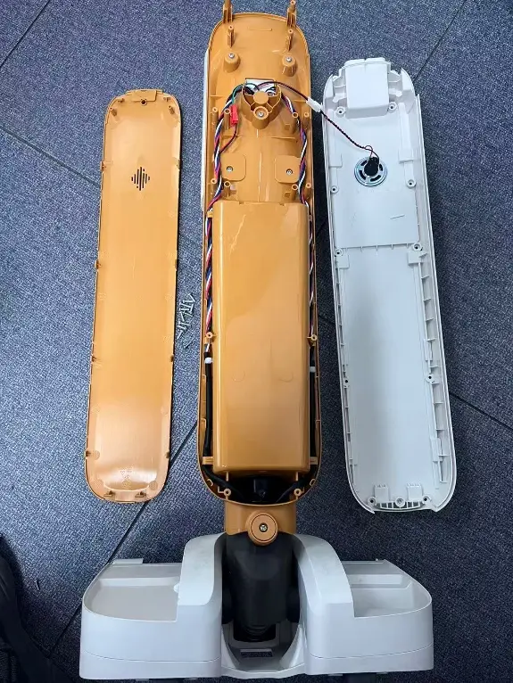
You can unscrew the screws on the back of the fuselage to access the power source components at the front of the fuselage (the battery and the main motor).
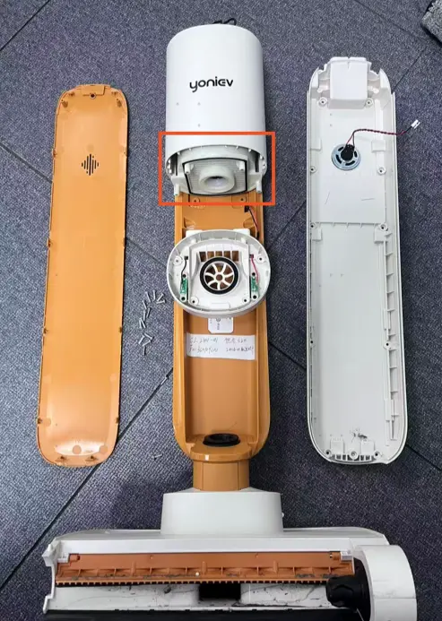
3. The disassembly of the floor brush
Remove the screws you see on the bottom of the floor brush. Of course, you need to remove the squeegee first, as there are screws hidden underneath it
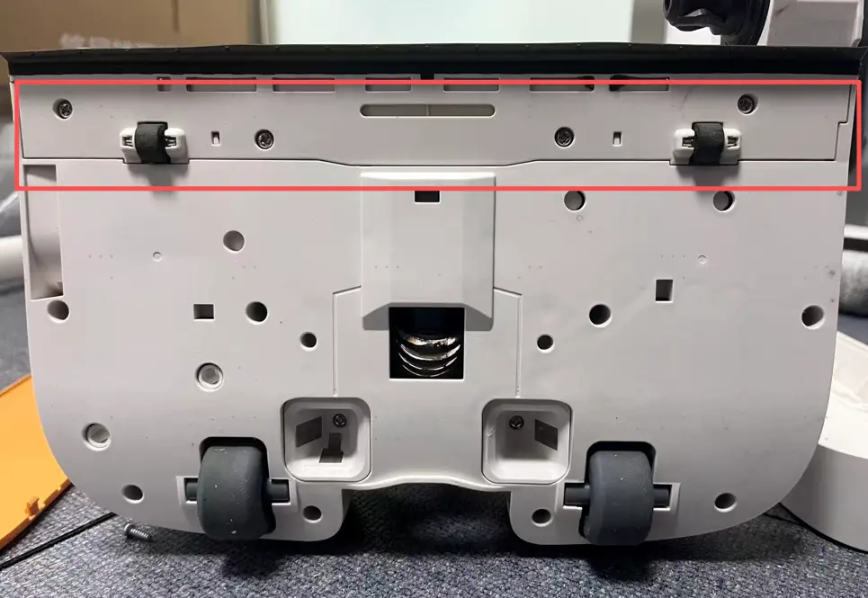
Remove the top cover of the floor brush and separate it from the base. You will then see the internal structure of the floor brush, including the motor, peristaltic pump, and so on. After that, you can proceed to repair them
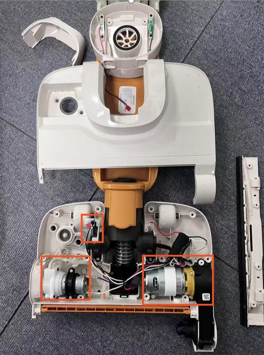
Repair Guide
| Failure System | Failure Phenomenon | No | Failure Cause | Repair Solution | Spare Parts Name |
|---|---|---|---|---|---|
| Water circulation system failure | No/Less Spray Water | 1 | Water Flow Or Air Flow Is Blocked | 1.Clean the debris channel blockage、debris wrapped around the brush roller 、brush roller chamber; 2.Dry and clean HEPA; 3.Empty and clean the DWT | Maintenance |
| 2 | CWT Failure | Replace CWT | CWT | ||
| 3 | Spray Hole Blocked | Clean spray hole | Maintenance | ||
| 4 | Spray Water Plate Failure | Replace spray water plate | Spray Water Plate | ||
| 5 | CWT Drain Valve Failue | Replace CWT drain valve | CWT Drain Valve | ||
| 6 | Pipe Bent Or Broken | fix or Replace pipe | Water Pipe | ||
| 7 | Pipe Blocked | Replace water pipe | Water Pipe | ||
| 8 | Water Level Sensor Failure | Replace water level sensor | Water Level Sensor | ||
| 9 | Pump Failure | Replace pump | Pump | ||
| 10 | Brush PCBA Failure | Replace Brush PCBA | Brush PCBA | ||
| 11 | If None Of The Above No Slove May Be Main PCBA Failure | Replace Main PCBA | Main PCBA | ||
| Leaking Water | 12 | Water Flow Or Air Flow Is Blocked | 1.Clean the debris channel blockage、debris wrapped around the brush roller 、brush roller chamber; 2.Dry and clean HEPA; 3.Empty and clean the DWT | Maintenance | |
| 13 | CWT Damage | Replace CWT | CWT | ||
| 14 | DWT Damage | Replace DWT | DWT | ||
| 15 | CWT Drain Valve Failue | Replace CWT drain valve | CWT Drain Valve | ||
| 16 | Water Pipe Loose | Repulg water pipe | Water Pipe | ||
| 17 | Water Pipe Damage | Replace water pipe | Water Pipe | ||
| 18 | Water Level Sensor Failure | Replace water level sensor | Water Level Sensor | ||
| 19 | Pump Failure | Replace pump | Pump | ||
| No Suck Up Water | 20 | Water Flow Or Air Flow Is Blocked | 1.Clean the debris channel blockage、debris wrapped around the brush roller 、brush roller chamber; 2.Dry and clean HEPA; 3.Empty and clean the DWT | Maintenance | |
| 21 | Hepa Severe Wear Or Damage | Replace HEPA | Hepa | ||
| 22 | Brush Roller Severe Wear Or Damage | Replace Brush roller | Brush Roller | ||
| 23 | Brush Cover Damage | Replace brush cover | CWT（With Cover） | ||
| 24 | Scraper Severe Wear Or Damage | Replace scraper | Scraper | ||
| 25 | Main Motor Failure | Replace Main motor and lay flat sensor | Main Motor And Lay Flat Sensor（Refer note） | ||
| 26 | Brush Motor Failure | Replace brush roller motor | Brush Roller Motor | ||
| 27 | Brush PCBA Failure | Replace Brush PCBA | Brush PCBA | ||
| 28 | If None Of The Above No Slove May Be Main PCBA Failure | replace Main PCBA | Main PCBA | ||
| Charging system failure | No Respense When Charging | 29 | Display Screen Failure | Replace display screen | Display Screen |
| 30 | Repair Charging Chip Failure | 1.Replug terminal 2.Replace Repair Charging Chip | Repair Charging Chip | ||
| 31 | Drying & Charging Dock Poor Contact | Replace Repair Charging Chip | Repair Charging Chip | ||
| 32 | Dock PCBA Failure | Replace Dock PCBA | Dock PCBA | ||
| 33 | Brush PCBA Failure | 1.Replug terminal 2.Replace Brush PCBA | Brush PCBA | ||
| 34 | Drying & Charging Dock Failure | Replace Drying & Charging Dock | Drying & Charging Dock | ||
| 35 | Power Cord Failure | Replace Drying & Charging Dock | Drying & Charging Dock | ||
| 36 | Battery Pack Failure | Replace battery pack | Battery Pack | ||
| 37 | Main PCBA Failure | Replace Main PCBA | Main PCBA | ||
| Screen Flashes And Dies Out In Charging | 38 | Dock PCBA Failure | Replace Dock PCBA | Dock PCBA | |
| 39 | Battery Pack Failure | Replace battery pack | Battery Pack | ||
| 40 | If None Of The Above No Slove May Be Main PCBA Failure | Replace Main PCBA | Main PCBA | ||
| Battery Level Unable To Increase | 41 | Dock PCBA Failure | Replace Dock PCBA | Dock PCBA | |
| 42 | Battery Pack Failure | Replace battery pack | Battery Pack | ||
| 43 | If None Of The Above No Slove May Be Main PCBA Failure | Replace Main PCBA | Main PCBA | ||
| Battery Level Drop When In Charging | 44 | Dock PCBA Failure | Replace Dock PCBA | Dock PCBA | |
| 45 | Battery Pack Failure | Replace battery pack | Battery Pack | ||
| 46 | If None Of The Above No Slove May Be Main PCBA Failure | Replace Main PCBA | Main PCBA | ||
| Poor charging contact（shake to charge） | 47 | Repair Charging Chip Is Rusted Or Poor Contact | Replace or clean the Repair Charging Chip | Repair Charging Chip | |
| 48 | Repair Charging Chip Cosmetic Damage | Replace Repair Charging Chip | Repair Charging Chip | ||
| 49 | Power Cord Is Poor Contact With Socket Outlet | Replace Drying & Charging Dock | Drying & Charging Dock | ||
| 50 | Drying & Charging Dock Cosmetic Damage | Replace Drying & Charging Dock | Drying & Charging Dock | ||
| Abnormal Noise When In Charging | 51 | Drying & Charging Dock Failure | Replace Dock PCBA | Dock PCBA | |
| 52 | Main PCBA Failure | Replace Main PCBA | Main PCBA | ||
| 53 | Battery Pack Failure | Replace battery pack | Battery Pack | ||
| Burn Smell In Mainbody When In Charging | 54 | Main PCBA Failure | Replace Main PCBA | Main PCBA | |
| 55 | Battery Pack Failure | Replace battery pack | Battery Pack | ||
| Buren Smell In Drying & Charging Dock When In Charging | 56 | Dock PCBA Failure | Replace Dock PCBA | Dock PCBA | |
| 57 | Drying & Charging Dock Failure | Replace Drying & Charging Dock | Drying & Charging Dock | ||
| Turn on failure | Turn On But No Reaction-Screen Not Light also no reaction when charging | 58 | Handle Failure | Replace handle | Handle |
| 59 | Display Screen Failure | Replace display screen | Display Screen | ||
| 60 | Main PCBA Failure | Replace Main PCBA | Main PCBA | ||
| 61 | Brush PCBA Failure | Replace Brush PCBA | Brush PCBA | ||
| 62 | Battery Pack Failure | Replace battery pack | Battery Pack | ||
| Turn On But No Reaction-Screen Light Up Not Running When Reclined | 63 | Micro Switch Failure | Replace Micro swtich failure | Micro Swtich | |
| 64 | Brush PCBA Failure | Replace Brush PCBA | Brush PCBA | ||
| 65 | Main PCBA Failure | Replace Main PCBA | Main PCBA | ||
| Don'T Stop Running When Put Upright | 66 | Micro Switch Failure | Replace Micro swtich failure | Micro Swtich | |
| 67 | Brush PCBA Failure | Replace Brush PCBA | Brush PCBA | ||
| 68 | Main PCBA Failure | Replace Main PCBA | Main PCBA | ||
| stop running after several times and DWT indicator alarm | 69 | DWT Full | Empty/clean the DWT | maintenance | |
| 70 | DWT Pin Rusted | Rinse and clean the DWT top cover, bottom cover and sensor pin,and dry off | maintenance | ||
| 71 | DWT Damage | replace DWT | DWT | ||
| 72 | Main PCBA Failure | Problem solved by replaced PCBA | Main PCBA | ||
| stop running after several times brush roller indicator alarm | 73 | Brush Roller Is Blocked | clean the brush roller | Maintenance | |
| 74 | Brush Roller Severe Wear Or Damage | replace brush roller | brush roller | ||
| 75 | Brush Roller Motor Failure | replace brush roller motor | Brush Roller Motor | ||
| 76 | Brush PCBA Failure | Replace brush PCBA | Brush PCBA | ||
| 77 | Main PCBA Failure | Replace Main PCBA | Main PCBA | ||
| Stop Running After Several Times Screen Dies Out | 78 | Handle Failure | Replace handle | Handle | |
| 79 | Motor Failure | Replace Main motor and lay flat sensor | Main Motor And Lay Flat Sensor（Refer note） | ||
| 80 | Main PCBA Failure | Replace Main PCBA | Main PCBA | ||
| 81 | Battery Pack Failure | Replace battery pack | Battery Pack | ||
| mode switch failure | Switch Mode But No Reaction | 82 | Handle Failure | Replace handle | Handle |
| 83 | Main PCBA Failure | Replace Main PCBA | Main PCBA | ||
| Switch Mode But Auto Power-Off | 84 | Main PCBA Failure | Replace Main PCBA | Main PCBA | |
| 85 | Battery Pack Failure | Replace battery pack | Battery Pack | ||
| 86 | Motor Failure | Replace Main motor and lay flat sensor | Main Motor And Lay Flat Sensor（Refer note） | ||
| False alarm | Stop Running After Several Times Screen Dies Out | 87 | Handle Failure | Replace handle | Handle |
| 88 | Motor Failure | Replace Main motor and lay flat sensor | Main Motor And Lay Flat Sensor（Refer note） | ||
| 89 | Battery Pack Failure | Replace battery pack | Battery Pack | ||
| 90 | Main PCBA Failure | Replace Main PCBA | Main PCBA | ||
| Dwt Flase Alarm- Dwt Water Is Not Full But Still Alarm | 91 | DWT Is Blocked | Rinse and clean the DWT top cover, bottom cover and sensor pin,and dry off | Maintenance | |
| 92 | DWT Is Very Dirty | Rinse and clean the DWT top cover, bottom cover and sensor pin,and dry off | Maintenance | ||
| 93 | DWT Damage | Replace DWT | DWT | ||
| 94 | DWT Signal Wire Failure | Replace DWT Signal wire | DWT Signal Wire | ||
| 95 | If None Of The Above No Slove May Be Main PCBA Failure | Replace Main PCBA | Main PCBA | ||
| Dwt Flase Alarm- Dwt Water Is Full But No Alarm | 96 | DWT Is Blocked | Rinse and clean the DWT top cover, bottom cover and sensor pin,and dry off | Maintenance | |
| 97 | DWT Is Very Dirty | Rinse and clean the DWT top cover, bottom cover and sensor pin,and dry off | Maintenance | ||
| 98 | DWT Damage | Replace DWT | DWT | ||
| 99 | DWT Signal Wire Failure | Replace DWT Signal wire | DWT Signal Wire | ||
| 100 | If None Of The Above No Slove May Be Main PCBA Failure | Replace Main PCBA | Main PCBA | ||
| CWT Flase Alarm- CWT Have Enough Water But Still Alarm Appliance Also Can’T Spray Water | 101 | CWT Damage | Replace CWT | CWT | |
| 102 | Spray Hole Blocked | clean spray hole | Maintenance | ||
| 103 | Impurities Are Blocking The CWT Drain Valve | clean or replace CWT Drain Valve | CWT Drain Valve | ||
| 104 | Pump Failure | Replace pump | Pump | ||
| 105 | Pipe Bent Or Broken | fix or Replace pipe | Water Pipe | ||
| 106 | Pipe Blocked | Replace water pipe | Water Pipe | ||
| 107 | Water Level Sensor Failure | Replace water level sensor | Water Level Sensor | ||
| 108 | Brush PCBA Failure | Replace Brush PCBA | Brush PCBA | ||
| 109 | Main PCBA Failure | Replace main pcba | Main PCBA | ||
| CWT Flase Alarm- CWT Have Enough Water But Still Alarm Appliance Can Spray Water | 110 | The Water Level Sensor Has Air Bubbles Inside | It tested okay after being turned up to the maximum setting for 30s | NFF | |
| 111 | Impurities Are Blocking The CWT Drain Valve | clean or replace CWT Drain Valve | CWT Drain Valve | ||
| 112 | Water Level Sensor Failure | Replace water level sensor | Water Level Sensor | ||
| 113 | Brush PCBA Failure | Replace Brush PCBA | Brush PCBA | ||
| 114 | Main PCBA Failure | Replace main pcba | Main PCBA | ||
| CWT Flase Alarm- CWT Have No Water But Not Alarm | 115 | The Water Level Sensor Has Air Bubbles Inside | It tested okay after being turned up to the maximum setting for 30s | NFF | |
| 116 | Impurities Are Blocking The CWT Drain Valve | clean or replace CWT Drain Valve | CWT Drain Valve | ||
| 117 | Water Level Sensor Failure | replace water level sensor | water level sensor | ||
| 118 | Water Pipe In Front Of The Water Level Sensor Blocked | replace water pipe | water pipe | ||
| 119 | Brush PCBA Failure | Replace Brush PCBA | Brush PCBA | ||
| 120 | Main PCBA Failure | replace main PCBA | main PCBA | ||
| Brush roller indicator blinking but the roller spinning normally | 121 | Brush Roller Severe Wear Or Damage | Replace brush roller | Brush Roller | |
| 122 | Brush Roller Motor Failure | Replace brush roller motor | Brush Roller Motor | ||
| 123 | Brush PCBA Failure | Replace Brush PCBA | Brush PCBA | ||
| 124 | Main PCBA Failure | Replace Main PCBA | Main PCBA | ||
| Iloop Ring Always Red | 125 | Water Flow Or Air Flow Is Blocked | 1.Clean the debris channel blockage、debris wrapped around the brush roller 、brush roller chamber; 2.Dry and clean HEPA; 3.Empty and clean the DWT | Maintenance | |
| 126 | Display Screen Failure | Replace display screen | Display Screen | ||
| 127 | Sewage Sensor Failure | Replace Sewage sensor | Sewage Sensor | ||
| 128 | Main PCBA Failure | Replace Main PCBA | Main PCBA | ||
| iloop ring always blue even suck dirty water (or other color liquid) | 129 | Sewage Sensor Failure | Replace Sewage sensor | Sewage Sensor | |
| 130 | Main PCBA Failure | Replace Main PCBA | Main PCBA | ||
| 131 | Display Screen Failure | Replace display screen | Display Screen | ||
| display screen failure | Screen Not Reaction/Display Incomplete/Display Blinking | 132 | Display Screen Failure | Replace display screen | Display Screen |
| 133 | Main PCBA Failure | Replace Main PCBA | Main PCBA | ||
| Iloop Ring Not Change | 134 | Sewage Sensor Failure | Replace Sewage sensor | Sewage Sensor | |
| 135 | Main PCBA Failure | Replace Main PCBA | Main PCBA | ||
| 136 | Display Screen Failure | Replace display screen | Display Screen | ||
| connect to network failure | Appliance Cannot Connect To Network | 137 | Main PCBA Failure | Replace Main PCBA | Main PCBA |
| Wifi/Mute/Language Switch Button No Reaction | 138 | Handle Failure | Replace handle | Handle | |
| 139 | Main PCBA Failure | Replace Main PCBA | Main PCBA | ||
| abnormal noise | Motor Noise | 140 | Motor Failure | Replace main motor | Main Motor |
| Noise comes from main body, but not from the motor | 141 | Hepa Damage | Replace HEPA | HEPA | |
| Wheel Noise | 142 | Wheel Severe Wear Or Damage | replace Repair Wheel | Repair Wheel | |
| Brush Roller Noise | 143 | Brush Roller Is Blocked | clean brush roller | Maintenance | |
| 144 | Brush Roller Severe Wear Or Damage | Replace brush roller | Brush Roller | ||
| 145 | Brush Roller Cover Severe Wear Or Damage | Replace brush roller cover | CWT（With Cover） | ||
| Scraper Noise | 146 | Scraper Is Blocked | clean the scraper | Maintenance | |
| 147 | Scraper Severe Wear Or Damage | Replace scraper | Scraper | ||
| Pump Noise | 148 | Pump Failure | Replace pump | Pump | |
| Self-cleaning malfunction | Press The Self-Cleaning Button,Voice Prompt“Please Place Appliance On Charging Dock | 149 | Repair Charging Chip Is Rusted Or Poor Contact | Replace or clean the Repair Charging Chip | Repair Charging Chip |
| 150 | Repair Charging Chip Cosmetic Damage | Replace Repair Charging Chip | Repair Charging Chip | ||
| 151 | Power Cord Is Poor Contact With Socket Outlet | Replace Drying & Charging Dock | Drying & Charging Dock | ||
| 152 | Drying & Charging Dock Cosmetic Damage | Replace Drying & Charging Dock | Drying & Charging Dock | ||
| 153 | Brush PCBA Failure | Replace Brush PCBA | Brush PCBA | ||
| 154 | Main PCBA Failure | Replace Main PCBA | Main PCBA | ||
| Stop Running In Self-Cleaning Process and the screen turned off | 155 | Repair Charging Chip Is Rusted Or Poor Contact | Replace or clean the Repair Charging Chip | Repair Charging Chip | |
| 156 | Repair Charging Chip Cosmetic Damage | Replace Repair Charging Chip | Repair Charging Chip | ||
| 157 | Power Cord Is Poor Contact With Socket Outlet | Replace Drying & Charging Dock | Drying & Charging Dock | ||
| 158 | Drying & Charging Dock Cosmetic Damage | Replace Drying & Charging Dock | Drying & Charging Dock | ||
| 159 | Brush PCBA Failure | Replace Brush PCBA | Brush PCBA | ||
| 160 | Main PCBA Failure | Replace Main PCBA | Main PCBA | ||
| stop running in self-cleaning process, and the DWT false alarm | 161 | DWT Full | Empty/clean the DWT | maintenance | |
| 162 | DWT Pin Rusted | Rinse and clean the DWT top cover, bottom cover and sensor pin,and dry off | maintenance | ||
| 163 | DWT Damage | replace DWT | DWT | ||
| 164 | PCBA Failure | Problem solved by replaced PCBA | PCBA | ||
| stop running in self-cleaning process, and the CWT false alarm | 165 | CWT Empty | Filled the CWT | NFF | |
| 166 | The Water Level Sensor Has Air Bubbles Inside | It tested okay after being turned up to the maximum setting for 30s | NFF | ||
| 167 | Impurities Are Blocking The CWT Drain Valve | clean or replace CWT Drain Valve | CWT Drain Valve | ||
| 168 | Water Level Sensor Failure | replace water level sensor | water level sensor | ||
| 169 | Brush PCBA Failure | Replace Brush PCBA | Brush PCBA | ||
| 170 | Main PCBA Failure | replace main PCBA | main PCBA | ||
| Press The Self-Cleaning Button But No Reaction | 171 | Handle Failure | Replace handle | Handle | |
| 172 | Main PCBA Failure | Replace Main PCBA | Main PCBA | ||
| Self-Cleaning Cannot Stop | 173 | Main PCBA Failure | Replace Main PCBA | Main PCBA | |
| Water Overflowed To The Ground In Self Cleaning | 174 | Water Flow Or Air Flow Is Blocked | 1.Clean the debris channel blockage、debris wrapped around the brush roller 、brush roller chamber; 2.Dry and clean HEPA; 3.Empty and clean the DWT | Maintenance | |
| 175 | Hepa Not Install Properly | reinstall HEPA properly | Maintenance | ||
| 176 | Brush Roller Severe Wear Or Damage | Replace Brush roller | Brush Roller | ||
| 177 | Brush Roller Cover Is Very Dirty | clean brush roller or replace CWT | Maintenance Or Replace CWT | ||
| 178 | Brush Motor Failure | Replace brush roller motor | Brush Roller Motor | ||
| 179 | Brush PCBA Failure | Replace brush PCBA | Brush PCBA | ||
| 180 | Water Pipe Damage | Replace water pipe | Water Pipe | ||
| 181 | Motor Failure | Replace main motor | Main Motor | ||
| 182 | Main PCBA Failure | Replace Main PCBA | Main PCBA | ||
| Brush roller not dry after Self-cleaning | 183 | Brush roller Very dirty | Clean or replace brush roller | Brush roller | |
| 184 | Dock PCBA Failure | Replace Dock PCBA | Dock PCBA | ||
| 185 | Drying & Charging Dock Failure | Replace Drying & Charging Dock | Drying & Charging Dock | ||
| 186 | Main PCBA Failure | Replace Main PCBA | Main PCBA | ||
| After Finish Self-Cleaning Program Still Remind “Please Begin Self-Cleaning Cycle” | 187 | Main PCBA Failure | Replace Main PCBA | Main PCBA | |
| Brush roller not spinning | Brush roller stop spinning, and the machine alarm brush abnormal | 188 | Brush Roller Is Blocked | clean brush roller | maintenance |
| 189 | Brush Roller Severe Wear Or Damage | replace brush roller | brush roller | ||
| 190 | Brush PCBA Failure | Replace brush PCBA | Brush PCBA | ||
| 191 | Brush Roller Motor Failure | replace brush roller motor | brush roller motor | ||
| Brush roller not spinning with no alarm | 192 | Brush Roller Motor Failure | replace brush roller motor | brush roller motor | |
| 193 | Main PCBA Failure | replace main PCBA | main PCBA | ||
| Drying & Charging Dry Function Failure | Brush roller not dry after Self-cleaning | 194 | Brush roller Very dirty | Clean or replace brush roller | Brush roller |
| 195 | Dock PCBA Failure | Replace Dock PCBA | Dock PCBA | ||
| 196 | Drying & Charging Dock Failure | Replace Drying & Charging Dock | Drying & Charging Dock | ||
| 197 | Main PCBA Failure | Replace Main PCBA | Main PCBA | ||
| Failure System | Failure Phenomenon | No | Failure Cause | Repair Solution | Spare Parts Name |
| Water circulation system failure | No/Less Spray Water | 1 | Water Flow Or Air Flow Is Blocked | 1.Clean the debris channel blockage、debris wrapped around the brush roller 、brush roller chamber; 2.Dry and clean HEPA; 3.Empty and clean the DWT | Maintenance |
| 2 | CWT Failure | Replace CWT | CWT | ||
| 3 | Spray Hole Blocked | Clean spray hole | Maintenance | ||
| 4 | Spray Water Plate Failure | Replace spray water plate | Spray Water Plate | ||
| 5 | CWT Drain Valve Failue | Replace CWT drain valve | CWT Drain Valve | ||
| 6 | Pipe Bent Or Broken | fix or Replace pipe | Water Pipe | ||
| 7 | Pipe Blocked | Replace water pipe | Water Pipe | ||
| 8 | Water Level Sensor Failure | Replace water level sensor | Water Level Sensor | ||
| 9 | Pump Failure | Replace pump | Pump | ||
| 10 | Brush PCBA Failure | Replace Brush PCBA | Brush PCBA | ||
| 11 | If None Of The Above No Slove May Be Main PCBA Failure | Replace Main PCBA | Main PCBA | ||
| Leaking Water | 12 | Water Flow Or Air Flow Is Blocked | 1.Clean the debris channel blockage、debris wrapped around the brush roller 、brush roller chamber; 2.Dry and clean HEPA; 3.Empty and clean the DWT | Maintenance | |
| 13 | CWT Damage | Replace CWT | CWT | ||
| 14 | DWT Damage | Replace DWT | DWT | ||
| 15 | CWT Drain Valve Failue | Replace CWT drain valve | CWT Drain Valve | ||
| 16 | Water Pipe Loose | Repulg water pipe | Water Pipe | ||
| 17 | Water Pipe Damage | Replace water pipe | Water Pipe | ||
| 18 | Water Level Sensor Failure | Replace water level sensor | Water Level Sensor | ||
| 19 | Pump Failure | Replace pump | Pump | ||
| No Suck Up Water | 20 | Water Flow Or Air Flow Is Blocked | 1.Clean the debris channel blockage、debris wrapped around the brush roller 、brush roller chamber; 2.Dry and clean HEPA; 3.Empty and clean the DWT | Maintenance | |
| 21 | Hepa Severe Wear Or Damage | Replace HEPA | Hepa | ||
| 22 | Brush Roller Severe Wear Or Damage | Replace Brush roller | Brush Roller | ||
| 23 | Brush Cover Damage | Replace brush cover | CWT（With Cover） | ||
| 24 | Scraper Severe Wear Or Damage | Replace scraper | Scraper | ||
| 25 | Main Motor Failure | Replace Main motor and lay flat sensor | Main Motor And Lay Flat Sensor（Refer note） | ||
| 26 | Brush Motor Failure | Replace brush roller motor | Brush Roller Motor | ||
| 27 | Brush PCBA Failure | Replace Brush PCBA | Brush PCBA | ||
| 28 | If None Of The Above No Slove May Be Main PCBA Failure | replace Main PCBA | Main PCBA | ||
| Charging system failure | No Respense When Charging | 29 | Display Screen Failure | Replace display screen | Display Screen |
| 30 | Repair Charging Chip Failure | 1.Replug terminal 2.Replace Repair Charging Chip | Repair Charging Chip | ||
| 31 | Drying & Charging Dock Poor Contact | Replace Repair Charging Chip | Repair Charging Chip | ||
| 32 | Dock PCBA Failure | Replace Dock PCBA | Dock PCBA | ||
| 33 | Brush PCBA Failure | 1.Replug terminal 2.Replace Brush PCBA | Brush PCBA | ||
| 34 | Drying & Charging Dock Failure | Replace Drying & Charging Dock | Drying & Charging Dock | ||
| 35 | Power Cord Failure | Replace Drying & Charging Dock | Drying & Charging Dock | ||
| 36 | Battery Pack Failure | Replace battery pack | Battery Pack | ||
| 37 | Main PCBA Failure | Replace Main PCBA | Main PCBA | ||
| Screen Flashes And Dies Out In Charging | 38 | Dock PCBA Failure | Replace Dock PCBA | Dock PCBA | |
| 39 | Battery Pack Failure | Replace battery pack | Battery Pack | ||
| 40 | If None Of The Above No Slove May Be Main PCBA Failure | Replace Main PCBA | Main PCBA | ||
| Battery Level Unable To Increase | 41 | Dock PCBA Failure | Replace Dock PCBA | Dock PCBA | |
| 42 | Battery Pack Failure | Replace battery pack | Battery Pack | ||
| 43 | If None Of The Above No Slove May Be Main PCBA Failure | Replace Main PCBA | Main PCBA | ||
| Battery Level Drop When In Charging | 44 | Dock PCBA Failure | Replace Dock PCBA | Dock PCBA | |
| 45 | Battery Pack Failure | Replace battery pack | Battery Pack | ||
| 46 | If None Of The Above No Slove May Be Main PCBA Failure | Replace Main PCBA | Main PCBA | ||
| Poor charging contact（shake to charge） | 47 | Repair Charging Chip Is Rusted Or Poor Contact | Replace or clean the Repair Charging Chip | Repair Charging Chip | |
| 48 | Repair Charging Chip Cosmetic Damage | Replace Repair Charging Chip | Repair Charging Chip | ||
| 49 | Power Cord Is Poor Contact With Socket Outlet | Replace Drying & Charging Dock | Drying & Charging Dock | ||
| 50 | Drying & Charging Dock Cosmetic Damage | Replace Drying & Charging Dock | Drying & Charging Dock | ||
| Abnormal Noise When In Charging | 51 | Drying & Charging Dock Failure | Replace Dock PCBA | Dock PCBA | |
| 52 | Main PCBA Failure | Replace Main PCBA | Main PCBA | ||
| 53 | Battery Pack Failure | Replace battery pack | Battery Pack | ||
| Burn Smell In Mainbody When In Charging | 54 | Main PCBA Failure | Replace Main PCBA | Main PCBA | |
| 55 | Battery Pack Failure | Replace battery pack | Battery Pack | ||
| Buren Smell In Drying & Charging Dock When In Charging | 56 | Dock PCBA Failure | Replace Dock PCBA | Dock PCBA | |
| 57 | Drying & Charging Dock Failure | Replace Drying & Charging Dock | Drying & Charging Dock | ||
| Turn on failure | Turn On But No Reaction-Screen Not Light also no reaction when charging | 58 | Handle Failure | Replace handle | Handle |
| 59 | Display Screen Failure | Replace display screen | Display Screen | ||
| 60 | Main PCBA Failure | Replace Main PCBA | Main PCBA | ||
| 61 | Brush PCBA Failure | Replace Brush PCBA | Brush PCBA | ||
| 62 | Battery Pack Failure | Replace battery pack | Battery Pack | ||
| Turn On But No Reaction-Screen Light Up Not Running When Reclined | 63 | Micro Switch Failure | Replace Micro swtich failure | Micro Swtich | |
| 64 | Brush PCBA Failure | Replace Brush PCBA | Brush PCBA | ||
| 65 | Main PCBA Failure | Replace Main PCBA | Main PCBA | ||
| Don'T Stop Running When Put Upright | 66 | Micro Switch Failure | Replace Micro swtich failure | Micro Swtich | |
| 67 | Brush PCBA Failure | Replace Brush PCBA | Brush PCBA | ||
| 68 | Main PCBA Failure | Replace Main PCBA | Main PCBA | ||
| stop running after several times and DWT indicator alarm | 69 | DWT Full | Empty/clean the DWT | maintenance | |
| 70 | DWT Pin Rusted | Rinse and clean the DWT top cover, bottom cover and sensor pin,and dry off | maintenance | ||
| 71 | DWT Damage | replace DWT | DWT | ||
| 72 | Main PCBA Failure | Problem solved by replaced PCBA | Main PCBA | ||
| stop running after several times brush roller indicator alarm | 73 | Brush Roller Is Blocked | clean the brush roller | Maintenance | |
| 74 | Brush Roller Severe Wear Or Damage | replace brush roller | brush roller | ||
| 75 | Brush Roller Motor Failure | replace brush roller motor | Brush Roller Motor | ||
| 76 | Brush PCBA Failure | Replace brush PCBA | Brush PCBA | ||
| 77 | Main PCBA Failure | Replace Main PCBA | Main PCBA | ||
| Stop Running After Several Times Screen Dies Out | 78 | Handle Failure | Replace handle | Handle | |
| 79 | Motor Failure | Replace Main motor and lay flat sensor | Main Motor And Lay Flat Sensor（Refer note） | ||
| 80 | Main PCBA Failure | Replace Main PCBA | Main PCBA | ||
| 81 | Battery Pack Failure | Replace battery pack | Battery Pack | ||
| mode switch failure | Switch Mode But No Reaction | 82 | Handle Failure | Replace handle | Handle |
| 83 | Main PCBA Failure | Replace Main PCBA | Main PCBA | ||
| Switch Mode But Auto Power-Off | 84 | Main PCBA Failure | Replace Main PCBA | Main PCBA | |
| 85 | Battery Pack Failure | Replace battery pack | Battery Pack | ||
| 86 | Motor Failure | Replace Main motor and lay flat sensor | Main Motor And Lay Flat Sensor（Refer note） | ||
| False alarm | Stop Running After Several Times Screen Dies Out | 87 | Handle Failure | Replace handle | Handle |
| 88 | Motor Failure | Replace Main motor and lay flat sensor | Main Motor And Lay Flat Sensor（Refer note） | ||
| 89 | Battery Pack Failure | Replace battery pack | Battery Pack | ||
| 90 | Main PCBA Failure | Replace Main PCBA | Main PCBA | ||
| Dwt Flase Alarm- Dwt Water Is Not Full But Still Alarm | 91 | DWT Is Blocked | Rinse and clean the DWT top cover, bottom cover and sensor pin,and dry off | Maintenance | |
| 92 | DWT Is Very Dirty | Rinse and clean the DWT top cover, bottom cover and sensor pin,and dry off | Maintenance | ||
| 93 | DWT Damage | Replace DWT | DWT | ||
| 94 | DWT Signal Wire Failure | Replace DWT Signal wire | DWT Signal Wire | ||
| 95 | If None Of The Above No Slove May Be Main PCBA Failure | Replace Main PCBA | Main PCBA | ||
| Dwt Flase Alarm- Dwt Water Is Full But No Alarm | 96 | DWT Is Blocked | Rinse and clean the DWT top cover, bottom cover and sensor pin,and dry off | Maintenance | |
| 97 | DWT Is Very Dirty | Rinse and clean the DWT top cover, bottom cover and sensor pin,and dry off | Maintenance | ||
| 98 | DWT Damage | Replace DWT | DWT | ||
| 99 | DWT Signal Wire Failure | Replace DWT Signal wire | DWT Signal Wire | ||
| 100 | If None Of The Above No Slove May Be Main PCBA Failure | Replace Main PCBA | Main PCBA | ||
| CWT Flase Alarm- CWT Have Enough Water But Still Alarm Appliance Also Can’T Spray Water | 101 | CWT Damage | Replace CWT | CWT | |
| 102 | Spray Hole Blocked | clean spray hole | Maintenance | ||
| 103 | Impurities Are Blocking The CWT Drain Valve | clean or replace CWT Drain Valve | CWT Drain Valve | ||
| 104 | Pump Failure | Replace pump | Pump | ||
| 105 | Pipe Bent Or Broken | fix or Replace pipe | Water Pipe | ||
| 106 | Pipe Blocked | Replace water pipe | Water Pipe | ||
| 107 | Water Level Sensor Failure | Replace water level sensor | Water Level Sensor | ||
| 108 | Brush PCBA Failure | Replace Brush PCBA | Brush PCBA | ||
| 109 | Main PCBA Failure | Replace main pcba | Main PCBA | ||
| CWT Flase Alarm- CWT Have Enough Water But Still Alarm Appliance Can Spray Water | 110 | The Water Level Sensor Has Air Bubbles Inside | It tested okay after being turned up to the maximum setting for 30s | NFF | |
| 111 | Impurities Are Blocking The CWT Drain Valve | clean or replace CWT Drain Valve | CWT Drain Valve | ||
| 112 | Water Level Sensor Failure | Replace water level sensor | Water Level Sensor | ||
| 113 | Brush PCBA Failure | Replace Brush PCBA | Brush PCBA | ||
| 114 | Main PCBA Failure | Replace main pcba | Main PCBA | ||
| CWT Flase Alarm- CWT Have No Water But Not Alarm | 115 | The Water Level Sensor Has Air Bubbles Inside | It tested okay after being turned up to the maximum setting for 30s | NFF | |
| 116 | Impurities Are Blocking The CWT Drain Valve | clean or replace CWT Drain Valve | CWT Drain Valve | ||
| 117 | Water Level Sensor Failure | replace water level sensor | water level sensor | ||
| 118 | Water Pipe In Front Of The Water Level Sensor Blocked | replace water pipe | water pipe | ||
| 119 | Brush PCBA Failure | Replace Brush PCBA | Brush PCBA | ||
| 120 | Main PCBA Failure | replace main PCBA | main PCBA | ||
| Brush roller indicator blinking but the roller spinning normally | 121 | Brush Roller Severe Wear Or Damage | Replace brush roller | Brush Roller | |
| 122 | Brush Roller Motor Failure | Replace brush roller motor | Brush Roller Motor | ||
| 123 | Brush PCBA Failure | Replace Brush PCBA | Brush PCBA | ||
| 124 | Main PCBA Failure | Replace Main PCBA | Main PCBA | ||
| Iloop Ring Always Red | 125 | Water Flow Or Air Flow Is Blocked | 1.Clean the debris channel blockage、debris wrapped around the brush roller 、brush roller chamber; 2.Dry and clean HEPA; 3.Empty and clean the DWT | Maintenance | |
| 126 | Display Screen Failure | Replace display screen | Display Screen | ||
| 127 | Sewage Sensor Failure | Replace Sewage sensor | Sewage Sensor | ||
| 128 | Main PCBA Failure | Replace Main PCBA | Main PCBA | ||
| iloop ring always blue even suck dirty water (or other color liquid) | 129 | Sewage Sensor Failure | Replace Sewage sensor | Sewage Sensor | |
| 130 | Main PCBA Failure | Replace Main PCBA | Main PCBA | ||
| 131 | Display Screen Failure | Replace display screen | Display Screen | ||
| display screen failure | Screen Not Reaction/Display Incomplete/Display Blinking | 132 | Display Screen Failure | Replace display screen | Display Screen |
| 133 | Main PCBA Failure | Replace Main PCBA | Main PCBA | ||
| Iloop Ring Not Change | 134 | Sewage Sensor Failure | Replace Sewage sensor | Sewage Sensor | |
| 135 | Main PCBA Failure | Replace Main PCBA | Main PCBA | ||
| 136 | Display Screen Failure | Replace display screen | Display Screen | ||
| connect to network failure | Appliance Cannot Connect To Network | 137 | Main PCBA Failure | Replace Main PCBA | Main PCBA |
| Wifi/Mute/Language Switch Button No Reaction | 138 | Handle Failure | Replace handle | Handle | |
| 139 | Main PCBA Failure | Replace Main PCBA | Main PCBA | ||
| abnormal noise | Motor Noise | 140 | Motor Failure | Replace main motor | Main Motor |
| Noise comes from main body, but not from the motor | 141 | Hepa Damage | Replace HEPA | HEPA | |
| Wheel Noise | 142 | Wheel Severe Wear Or Damage | replace Repair Wheel | Repair Wheel | |
| Brush Roller Noise | 143 | Brush Roller Is Blocked | clean brush roller | Maintenance | |
| 144 | Brush Roller Severe Wear Or Damage | Replace brush roller | Brush Roller | ||
| 145 | Brush Roller Cover Severe Wear Or Damage | Replace brush roller cover | CWT（With Cover） | ||
| Scraper Noise | 146 | Scraper Is Blocked | clean the scraper | Maintenance | |
| 147 | Scraper Severe Wear Or Damage | Replace scraper | Scraper | ||
| Pump Noise | 148 | Pump Failure | Replace pump | Pump | |
| Self-cleaning malfunction | Press The Self-Cleaning Button,Voice Prompt“Please Place Appliance On Charging Dock | 149 | Repair Charging Chip Is Rusted Or Poor Contact | Replace or clean the Repair Charging Chip | Repair Charging Chip |
| 150 | Repair Charging Chip Cosmetic Damage | Replace Repair Charging Chip | Repair Charging Chip | ||
| 151 | Power Cord Is Poor Contact With Socket Outlet | Replace Drying & Charging Dock | Drying & Charging Dock | ||
| 152 | Drying & Charging Dock Cosmetic Damage | Replace Drying & Charging Dock | Drying & Charging Dock | ||
| 153 | Brush PCBA Failure | Replace Brush PCBA | Brush PCBA | ||
| 154 | Main PCBA Failure | Replace Main PCBA | Main PCBA | ||
| Stop Running In Self-Cleaning Process and the screen turned off | 155 | Repair Charging Chip Is Rusted Or Poor Contact | Replace or clean the Repair Charging Chip | Repair Charging Chip | |
| 156 | Repair Charging Chip Cosmetic Damage | Replace Repair Charging Chip | Repair Charging Chip | ||
| 157 | Power Cord Is Poor Contact With Socket Outlet | Replace Drying & Charging Dock | Drying & Charging Dock | ||
| 158 | Drying & Charging Dock Cosmetic Damage | Replace Drying & Charging Dock | Drying & Charging Dock | ||
| 159 | Brush PCBA Failure | Replace Brush PCBA | Brush PCBA | ||
| 160 | Main PCBA Failure | Replace Main PCBA | Main PCBA | ||
| stop running in self-cleaning process, and the DWT false alarm | 161 | DWT Full | Empty/clean the DWT | maintenance | |
| 162 | DWT Pin Rusted | Rinse and clean the DWT top cover, bottom cover and sensor pin,and dry off | maintenance | ||
| 163 | DWT Damage | replace DWT | DWT | ||
| 164 | PCBA Failure | Problem solved by replaced PCBA | PCBA | ||
| stop running in self-cleaning process, and the CWT false alarm | 165 | CWT Empty | Filled the CWT | NFF | |
| 166 | The Water Level Sensor Has Air Bubbles Inside | It tested okay after being turned up to the maximum setting for 30s | NFF | ||
| 167 | Impurities Are Blocking The CWT Drain Valve | clean or replace CWT Drain Valve | CWT Drain Valve | ||
| 168 | Water Level Sensor Failure | replace water level sensor | water level sensor | ||
| 169 | Brush PCBA Failure | Replace Brush PCBA | Brush PCBA | ||
| 170 | Main PCBA Failure | replace main PCBA | main PCBA | ||
| Press The Self-Cleaning Button But No Reaction | 171 | Handle Failure | Replace handle | Handle | |
| 172 | Main PCBA Failure | Replace Main PCBA | Main PCBA | ||
| Self-Cleaning Cannot Stop | 173 | Main PCBA Failure | Replace Main PCBA | Main PCBA | |
| Water Overflowed To The Ground In Self Cleaning | 174 | Water Flow Or Air Flow Is Blocked | 1.Clean the debris channel blockage、debris wrapped around the brush roller 、brush roller chamber; 2.Dry and clean HEPA; 3.Empty and clean the DWT | Maintenance | |
| 175 | Hepa Not Install Properly | reinstall HEPA properly | Maintenance | ||
| 176 | Brush Roller Severe Wear Or Damage | Replace Brush roller | Brush Roller | ||
| 177 | Brush Roller Cover Is Very Dirty | clean brush roller or replace CWT | Maintenance Or Replace CWT | ||
| 178 | Brush Motor Failure | Replace brush roller motor | Brush Roller Motor | ||
| 179 | Brush PCBA Failure | Replace brush PCBA | Brush PCBA | ||
| 180 | Water Pipe Damage | Replace water pipe | Water Pipe | ||
| 181 | Motor Failure | Replace main motor | Main Motor | ||
| 182 | Main PCBA Failure | Replace Main PCBA | Main PCBA | ||
| Brush roller not dry after Self-cleaning | 183 | Brush roller Very dirty | Clean or replace brush roller | Brush roller | |
| 184 | Dock PCBA Failure | Replace Dock PCBA | Dock PCBA | ||
| 185 | Drying & Charging Dock Failure | Replace Drying & Charging Dock | Drying & Charging Dock | ||
| 186 | Main PCBA Failure | Replace Main PCBA | Main PCBA | ||
| After Finish Self-Cleaning Program Still Remind “Please Begin Self-Cleaning Cycle” | 187 | Main PCBA Failure | Replace Main PCBA | Main PCBA | |
| Brush roller not spinning | Brush roller stop spinning, and the machine alarm brush abnormal | 188 | Brush Roller Is Blocked | clean brush roller | maintenance |
| 189 | Brush Roller Severe Wear Or Damage | replace brush roller | brush roller | ||
| 190 | Brush PCBA Failure | Replace brush PCBA | Brush PCBA | ||
| 191 | Brush Roller Motor Failure | replace brush roller motor | brush roller motor | ||
| Brush roller not spinning with no alarm | 192 | Brush Roller Motor Failure | replace brush roller motor | brush roller motor | |
| 193 | Main PCBA Failure | replace main PCBA | main PCBA | ||
| Drying & Charging Dry Function Failure | Brush roller not dry after Self-cleaning | 194 | Brush roller Very dirty | Clean or replace brush roller | Brush roller |
| 195 | Dock PCBA Failure | Replace Dock PCBA | Dock PCBA | ||
| 196 | Drying & Charging Dock Failure | Replace Drying & Charging Dock | Drying & Charging Dock | ||
| 197 | Main PCBA Failure | Replace Main PCBA | Main PCBA |